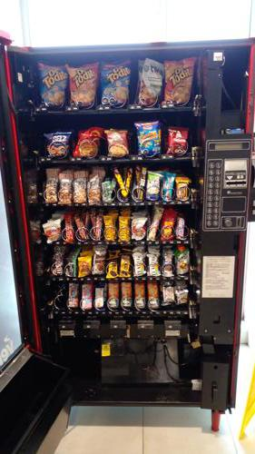
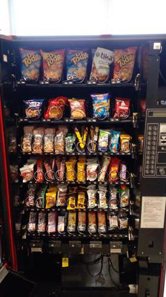

Antes de AbastecerNo se detectaron espirales vacios.

id 406.557 |
Luego de AbastecerNo se detectaron espirales vacios.

id 406.558 |
|
| Fecha |
Reporte |
Vacios ANT |
% Abast |
% Quiebre |
Sum QTY |
Rotación Diaria |
Abast hace (días) |
| 12-08-2021 |
Viendo |
0 |
1.4 |
- |
12 |
6 |
2 |
| 10-08-2021 |
Ver |
0 |
16.7 |
- |
142 |
28 |
5 |
| 05-08-2021 |
Ver |
3 |
5.9 |
7.5 |
50 |
25 |
2 |
| 03-08-2021 |
Ver |
0 |
3.4 |
- |
29 |
5 |
5 |
| 29-07-2021 |
Ver |
1 |
7.3 |
2.5 |
62 |
31 |
2 |
| 27-07-2021 |
Ver |
0 |
2.6 |
- |
22 |
4 |
5 |
|
|
|
Se abasteció la máquina con:
Total de 12 unidades de 2 productos.
| Qty. |
Producto |
SubFamilia |
Familia |
| 6 |
Andifrut Piña Tetra 200 C |
Jugos |
Tetras |
| 6 |
Leche Tetra Mono Chocolat |
Leche |
Tetras |
| Productos más abastecidos en últimas 6 semanas:
| Nro. Abast |
Qty/Abast |
Producto |
Abast hace (días) |
Fecha |
| 13 |
12 |
Andifrut Naranja Tetra 20 |
2 |
10-08-2021 |
| 10 |
9 |
Andifrut Piña Tetra 200 C |
0 |
12-08-2021 |
| 9 |
14 |
Super Ocho Clasico 24 Gr |
2 |
10-08-2021 |
| 8 |
6 |
Ramitas Queso Evercrisp |
28 |
15-07-2021 |
| 7 |
11 |
Brownie Choc 24Un Nutrabi |
2 |
10-08-2021 |
| Productos menos abastecidos en últimas 6 semanas:
| Nro. Abast |
Qty/Abast |
Producto |
Abast hace (días) |
Fecha |
| 1 |
20 |
Mix Coco Las Mellizas 35 |
2 |
10-08-2021 |
| 1 |
20 |
Almendras Confitadas Las |
9 |
03-08-2021 |
| 2 |
5 |
Papas Nativas Andina Tika |
38 |
05-07-2021 |
| 2 |
6 |
Muibon Chocolate De Leche |
38 |
05-07-2021 |
| 2 |
7 |
Ramitas Saladas Evercris |
38 |
05-07-2021 |
|
|